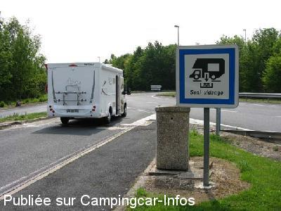

AA = Aire de services sur autoroute de :
A26 Troyes=> Chalon en Champagne SOMMESOUS
(N° 42)
Accès/adresse :
A 26 Km 336
Latitude : (Nord) 48.73066° Décimaux ou 48° 43′ 50′′
Longitude : (Est) 4.22711° Décimaux ou 4° 13′ 37′′
Tarif : Gratuit
Type de borne : Autre
Services :

Autres informations :

Le 23/06/2010 par Dominique
de
Lucky3
le 31/01/2013 :
Le 29/01/2013, je suis repassé à l'aire de SOMMESOUS (51). Aucun changement après mon passage du 08/09/1012. En plus, pas d'eau au robinet poussoir et pas de receptacle pour les eaux noires.
Le 29/01/2013, je suis repassé à l'aire de SOMMESOUS (51). Aucun changement après mon passage du 08/09/1012. En plus, pas d'eau au robinet poussoir et pas de receptacle pour les eaux noires.
de
Lucky3
le 08/09/2012 :
Le 03 septembre 2012.
cette aire est en refection,donc inutilisable ce jour, à part une prise d'eau sur bouton poussoir.
Mais je peux dire déja que la grille d'évacuation des eaux grises n'est plus transversale mais placée A DROITE du passage : ceux qui ont le robinet à gauche vident sur le bitume !... La prise d'eau n'a pas de receptacle, ce qui veut dire que quand vous avez assez d'eau, le reste coule sur le bitume !...
Un constat devra être fait plus tard pour voir comment se présentera l'évacuation des eaux noires.
Le 03 septembre 2012.
cette aire est en refection,donc inutilisable ce jour, à part une prise d'eau sur bouton poussoir.
Mais je peux dire déja que la grille d'évacuation des eaux grises n'est plus transversale mais placée A DROITE du passage : ceux qui ont le robinet à gauche vident sur le bitume !... La prise d'eau n'a pas de receptacle, ce qui veut dire que quand vous avez assez d'eau, le reste coule sur le bitume !...
Un constat devra être fait plus tard pour voir comment se présentera l'évacuation des eaux noires.
de
Dominique
le 23/06/2010 :
Une grille transversale sur la chaussée pour la vidange des eaux usées + WC chimiques car rien de prévu de séparé pour la vidange des WC. Pas d'eau.§
Une grille transversale sur la chaussée pour la vidange des eaux usées + WC chimiques car rien de prévu de séparé pour la vidange des WC. Pas d'eau.§